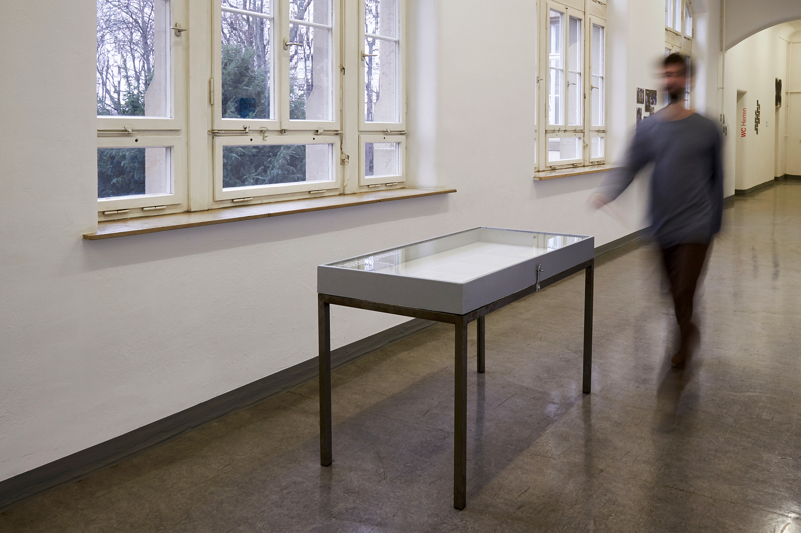
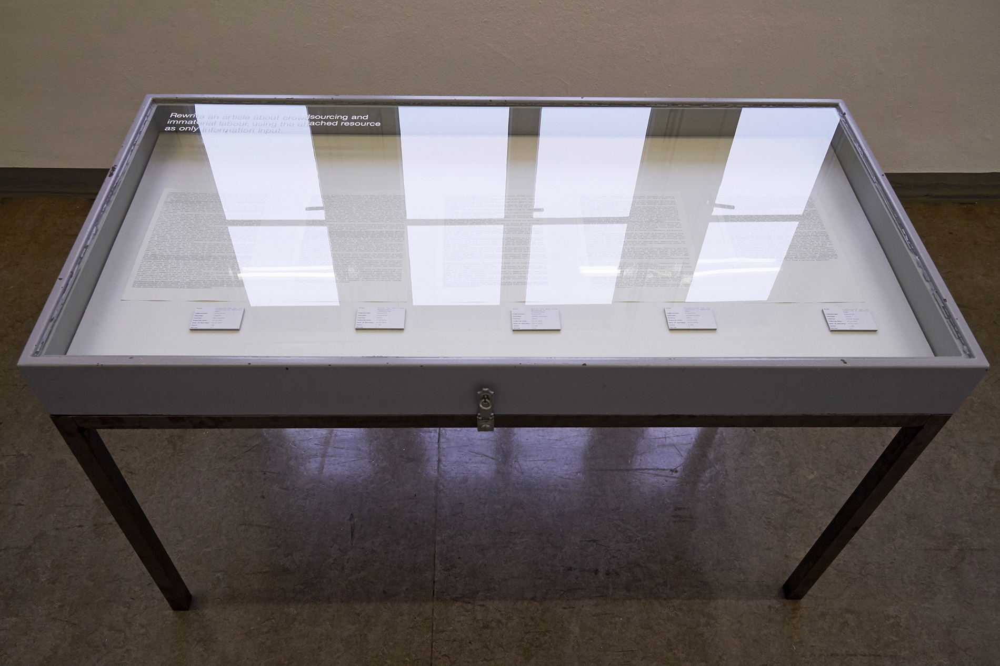

GlassUp
Privatsphäre und Wearables
“You should presume that someday, we will be able to make machines that can reason, think and do things better than we can.”
- Sergey Brin

Google bekam globale Aufmerksamkeit, als sie ihre Google Glass vorstellten. Laut ihrer Webseite war es selbst eine Entdeckungreise, die die Firma genommen hatte.
Und die Reaktionen waren gemischter Natur. Ein Diskussion entstand: Wie geht man mit der Privatsphäre des Einzelnen um? Was nehmen Dritte automatisch mit der Google Glass auf?
Wie sinnbildlich schon die Form der Google Glass schon für dieses Thema steht und dass auch Papierprototypen Aufsehen erregen können untersuchte ich in Zusammenarbeit mit Sophie Schulz.

In Kooperation entstand ein aufnahmefähiges Modell aus Holz, groß genug um zu verdeutlichen, wie aktuell und wichtig diese Diskussion heute schon ist.
